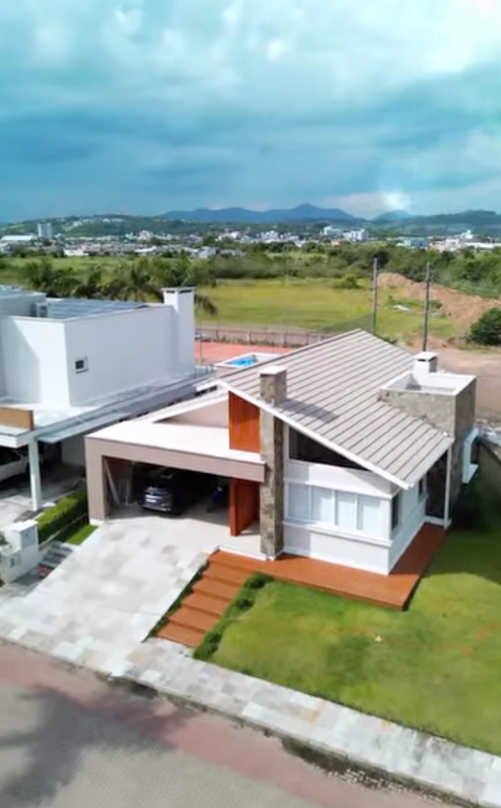

Carolina Selistre
Arquiteta & Urbanista
@carolinaselistre_arq_e_urb
( desde 2008 )
Nossa essência
Desde 2008, ouvindo, acolhendo e projetando. Antes de projetar, a gente escuta — porque uma casa não precisa só ser bonita, ela precisa fazer sentido para quem vive nela.
Quem somos
A Espacio nasceu em 2008 com a ideia de construir projetos mais humanos, pensados para a vida real. Mais do que desenhar espaços, nosso trabalho é traduzir pessoas em arquitetura.

Arquiteta & Urbanista
@carolinaselistre_arq_e_urbDesigner de Interiores
@arroba2
Um refúgio pensado
A luz, a paisagem e o entorno entram na casa e se tornam parte dela.
Cada detalhe importa
Os ambientes nascem da rotina, dos afetos e das memórias de quem vive ali.
Como trabalhamos
Entendemos sua rotina, seus desejos e o que faz você se sentir em casa.
Transformamos histórias em conceito, materiais, cores e sensações.
Do projeto arquitetônico ao último detalhe de interiores, acompanhamos tudo.
Projetos selecionados


Vamos conversar
Conte sua história. A gente escuta e transforma em projeto.